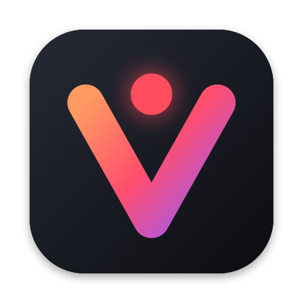
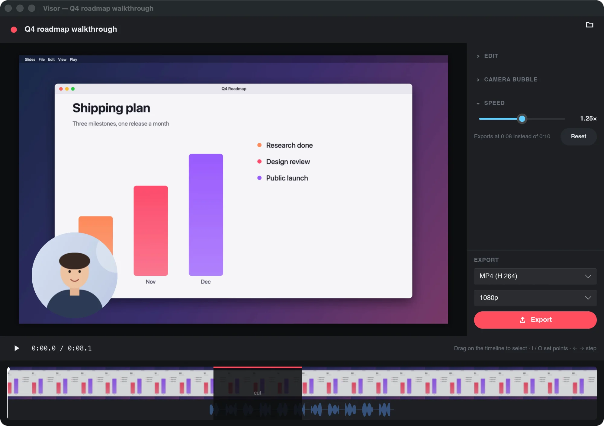
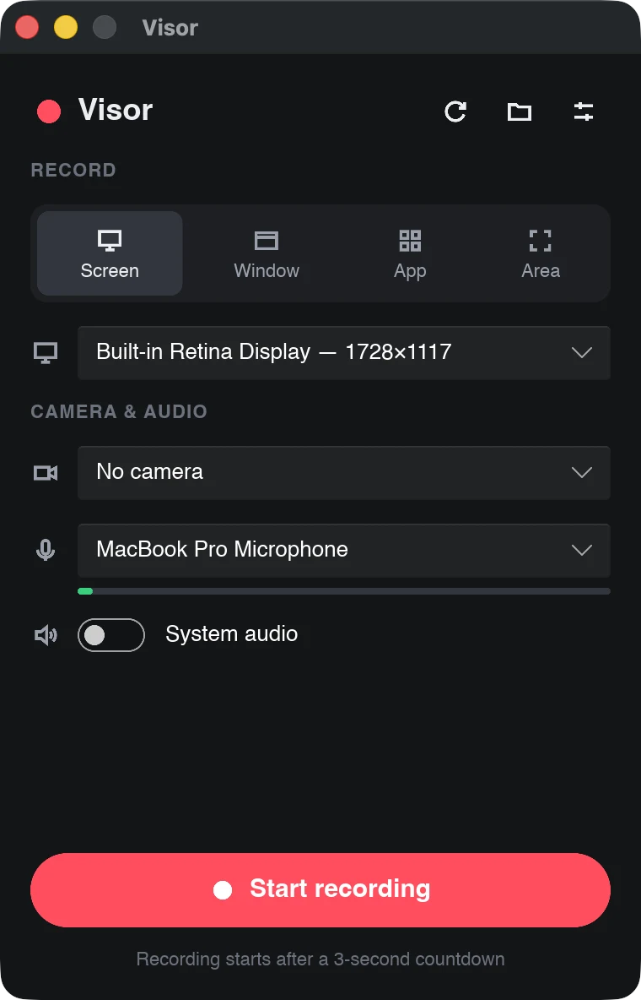

Record anything
The whole screen, one window, every window of an app, or an area you drag out.

Record your screen, your camera and your voice, trim out the mistakes and export a video to share. No account, no uploads, no subscription. Visor is free and open source.
macOS 14 Sonoma or later · Apple Silicon · Free

The whole screen, one window, every window of an app, or an area you drag out.
Add your camera as a circle or rounded square, drag it anywhere, resize it, mirror it.
Record your microphone and your Mac's audio, from every app or just one.
Pause and resume as often as you like. It all ends up in one recording.
Cut the stumbles, trim the ends and play it back at 0.5× to 2×, with speech that still sounds like you.
MP4, WebM or GIF, at 1080p, 720p or full size, ready to drop into a chat or an email.
Visor's own controls and camera bubble never show up in what you record.
Recordings are plain folders on your disk. No account, no cloud, no tracking.

Visor has no ads, no paid tier and no data to sell. If it saves you time, a small donation helps keep it maintained and brings it to Windows and Linux sooner.
Support Visor on Ko-fiVisor isn't notarized by Apple yet. The first time, right-click Visor in Applications and choose Open, then Open again. After that it opens normally. Visor then asks for Screen Recording permission, and for the camera and microphone when you choose them.
To ~/Movies/Visor, one folder per recording, which you can
change in Preferences. Edits never touch the original tracks, so you can
always go back and export again.
Only to check for updates, and only if you say yes when it asks. The check downloads a small list of versions from this site; it sends no account, no recordings and nothing about what you do. Every update is signed, and Visor refuses one that doesn't match its signature. You can also check by hand from the menu bar: Check for Updates…
Not yet. Visor runs on Apple Silicon Macs today. Windows and Linux versions are being built and need testers; follow the project on GitHub.
Yes. Visor is open source under the GPL-3.0 licence. There's no account, no trial and nothing to upgrade to. Donations are optional.